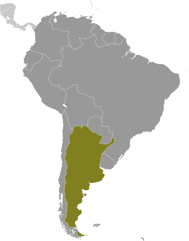
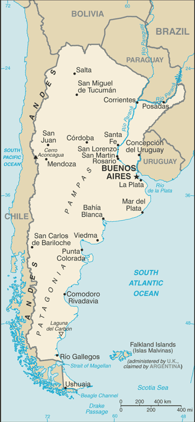
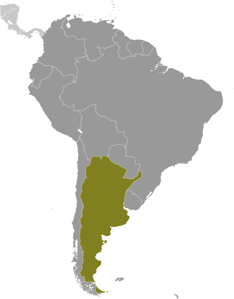
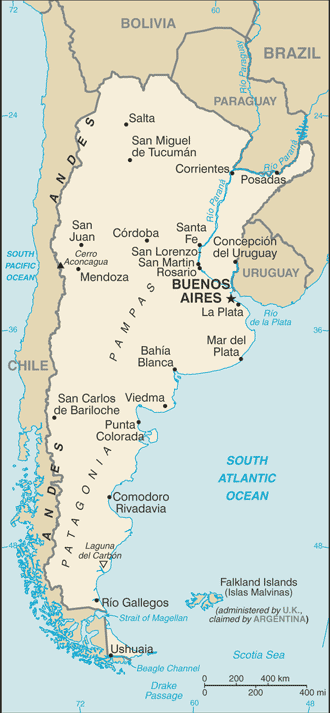

South America :: ARGENTINA
Introduction :: ARGENTINA
-
In 1816, the United Provinces of the Rio Plata declared their independence from Spain. After Bolivia, Paraguay, and Uruguay went their separate ways, the area that remained became Argentina. The country's population and culture were heavily shaped by immigrants from throughout Europe, with Italy and Spain providing the largest percentage of newcomers from 1860 to 1930. Up until about the mid-20th century, much of Argentina's history was dominated by periods of internal political conflict between Federalists and Unitarians and between civilian and military factions.After World War II, an era of Peronist populism and direct and indirect military interference in subsequent governments was followed by a military junta that took power in 1976. Democracy returned in 1983 after a failed bid to seize the Falkland Islands (Islas Malvinas) by force, and has persisted despite numerous challenges, the most formidable of which was a severe economic crisis in 2001-02 that led to violent public protests and the successive resignations of several presidents. The years 2003-15 saw Peronist rule by Nestor and Cristina FERNANDEZ de KIRCHNER, whose policies isolated Argentina and caused economic stagnation. With the election of Mauricio MACRI in November 2015, Argentina began a period of reform and international reintegration.
Geography :: ARGENTINA
-
Southern South America, bordering the South Atlantic Ocean, between Chile and Uruguay34 00 S, 64 00 WSouth Americatotal: 2,780,400 sq kmland: 2,736,690 sq kmwater: 43,710 sq kmcountry comparison to the world: 9slightly less than three-tenths the size of the UStotal: 11,968 kmborder countries (5): Bolivia 942 km, Brazil 1,263 km, Chile 6,691 km, Paraguay 2,531 km, Uruguay 541 km4,989 kmterritorial sea: 12 nmcontiguous zone: 24 nmexclusive economic zone: 200 nmcontinental shelf: 200 nm or to the edge of the continental marginmostly temperate; arid in southeast; subantarctic in southwestrich plains of the Pampas in northern half, flat to rolling plateau of Patagonia in south, rugged Andes along western bordermean elevation: 595 melevation extremes: lowest point: Laguna del Carbon -105 m (located between Puerto San Julian and Comandante Luis Piedra Buena in the province of Santa Cruz)highest point: Cerro Aconcagua 6,962 m (located in the northwestern corner of the province of Mendoza; highest point in South America)fertile plains of the pampas, lead, zinc, tin, copper, iron ore, manganese, petroleum, uranium, arable landagricultural land: 53.9%arable land 13.9%; permanent crops 0.4%; permanent pasture 39.6%forest: 10.7%other: 35.4% (2011 est.)23,600 sq km (2012)one-third of the population lives in Buenos Aires; pockets of agglomeration occur throughout the northern and central parts of the country; Patagonia to the south remains sparsely populatedSan Miguel de Tucuman and Mendoza areas in the Andes subject to earthquakes; pamperos are violent windstorms that can strike the pampas and northeast; heavy flooding in some areasvolcanism: volcanic activity in the Andes Mountains along the Chilean border; Copahue (2,997 m) last erupted in 2000; other historically active volcanoes include Llullaillaco, Maipo, Planchon-Peteroa, San Jose, Tromen, Tupungatito, and Viedmaenvironmental problems (urban and rural) typical of an industrializing economy such as deforestation, soil degradation, desertification, air pollution, and water pollutionnote: Argentina is a world leader in setting voluntary greenhouse gas targetsparty to: Antarctic-Environmental Protocol, Antarctic-Marine Living Resources, Antarctic Seals, Antarctic Treaty, Biodiversity, Climate Change, Climate Change-Kyoto Protocol, Desertification, Endangered Species, Environmental Modification, Hazardous Wastes, Law of the Sea, Marine Dumping, Ozone Layer Protection, Ship Pollution, Wetlands, Whalingsigned, but not ratified: Marine Life Conservationsecond-largest country in South America (after Brazil); strategic location relative to sea lanes between the South Atlantic and the South Pacific Oceans (Strait of Magellan, Beagle Channel, Drake Passage); diverse geophysical landscapes range from tropical climates in the north to tundra in the far south; Cerro Aconcagua is the Western Hemisphere's tallest mountain, while Laguna del Carbon is the lowest point in the Western Hemisphere; shares Iguazu Falls, the world's largest waterfalls system, with Brazil
People and Society :: ARGENTINA
-
44,293,293 (July 2017 est.)country comparison to the world: 31noun: Argentine(s)adjective: ArgentineEuropean (mostly Spanish and Italian descent) and mestizo (mixed European and Amerindian ancestry) 97.2%, Amerindian 2.4%, African 0.4% (2010 est.)Spanish (official), Italian, English, German, French, indigenous (Mapudungun, Quechua)nominally Roman Catholic 92% (less than 20% practicing), Protestant 2%, Jewish 2%, other 4%Argentina's population continues to grow but at a slower rate because of its steadily declining birth rate. Argentina's fertility decline began earlier than in the rest of Latin America, occurring most rapidly between the early 20th century and the 1950s and then becoming more gradual. Life expectancy has been improving, most notably among the young and the poor. While the population under age 15 is shrinking, the youth cohort - ages 15-24 - is the largest in Argentina's history and will continue to bolster the working-age population. If this large working-age population is well-educated and gainfully employed, Argentina is likely to experience an economic boost and possibly higher per capita savings and investment. Although literacy and primary school enrollment are nearly universal, grade repetition is problematic and secondary school completion is low. Both of these issues vary widely by region and socioeconomic group.Argentina has been primarily a country of immigration for most of its history, welcoming European immigrants after its independence in the 19th century and attracting especially large numbers from Spain and Italy. European immigration diminished in the 1950s, when Argentina's military dictatorships tightened immigration rules and European economies rebounded. Regional migration, however, continued to supply low-skilled workers and today it accounts for three-quarters of Argentina's immigrant population. The first waves of highly skilled Argentine emigrant workers headed mainly to the United States and Spain in the 1960s and 1970s. The 2008 European economic crisis drove the return migration of some Argentinean and other Latin American nationals, as well as the immigration of Europeans to South America, where Argentina was a key recipient.0-14 years: 24.59% (male 5,612,766/female 5,278,857)15-24 years: 15.28% (male 3,460,276/female 3,307,227)25-54 years: 39.38% (male 8,707,818/female 8,733,370)55-64 years: 9.13% (male 1,963,923/female 2,081,796)65 years and over: 11.62% (male 2,159,811/female 2,987,449) (2017 est.)total dependency ratio: 56.5youth dependency ratio: 39.4elderly dependency ratio: 17.1potential support ratio: 5.8 (2015 est.)total: 31.7 yearsmale: 30.5 yearsfemale: 32.9 years (2017 est.)country comparison to the world: 1050.91% (2017 est.)country comparison to the world: 12616.7 births/1,000 population (2017 est.)country comparison to the world: 1107.5 deaths/1,000 population (2017 est.)country comparison to the world: 110-0.1 migrant(s)/1,000 population (2017 est.)country comparison to the world: 106one-third of the population lives in Buenos Aires; pockets of agglomeration occur throughout the northern and central parts of the country; Patagonia to the south remains sparsely populatedurban population: 92% of total population (2017)rate of urbanization: 0.93% annual rate of change (2015-20 est.)BUENOS AIRES (capital) 15.18 million; Cordoba 1.511 million; Rosario 1.381 million; Mendoza 1.009 million; San Miguel de Tucuman 910,000; La Plata 846,000 (2015)at birth: 1.05 male(s)/female0-14 years: 1.06 male(s)/female15-24 years: 1.05 male(s)/female25-54 years: 1 male(s)/female55-64 years: 0.94 male(s)/female65 years and over: 0.71 male(s)/femaletotal population: 0.98 male(s)/female (2016 est.)52 deaths/100,000 live births (2015 est.)country comparison to the world: 94total: 9.8 deaths/1,000 live birthsmale: 10.7 deaths/1,000 live birthsfemale: 8.8 deaths/1,000 live births (2017 est.)country comparison to the world: 139total population: 77.3 yearsmale: 74.2 yearsfemale: 80.6 years (2017 est.)country comparison to the world: 742.26 children born/woman (2017 est.)country comparison to the world: 9381.3% (2013)4.8% of GDP (2014)country comparison to the world: 1463.76 physicians/1,000 population (2013)4.7 beds/1,000 population (2012)improved:urban: 99% of populationrural: 100% of populationtotal: 99.1% of populationunimproved:urban: 1% of populationrural: 0% of populationtotal: 0.9% of population (2015 est.)improved:urban: 96.2% of populationrural: 98.3% of populationtotal: 96.4% of populationunimproved:urban: 3.8% of populationrural: 1.7% of populationtotal: 3.6% of population (2015 est.)0.4% (2016 est.)country comparison to the world: 75120,000 (2016 est.)country comparison to the world: 382,400 (2016 est.)country comparison to the world: 48note: active local transmission of Zika virus by Aedes species mosquitoes has been identified in this country (as of August 2016); it poses an important risk (a large number of cases possible) among US citizens if bitten by an infective mosquito; other less common ways to get Zika are through sex, via blood transfusion, or during pregnancy, in which the pregnant woman passes Zika virus to her fetus (2016)28.3% (2016)country comparison to the world: 312.3% (2005)country comparison to the world: 1195.5% of GDP (2014)country comparison to the world: 32definition: age 15 and over can read and writetotal population: 98.1%male: 98%female: 98.1% (2015 est.)total: 17 yearsmale: 16 yearsfemale: 18 years (2014)total: 18.3%male: 15.6%female: 22.8% (2014 est.)country comparison to the world: 63
Government :: ARGENTINA
-
conventional long form: Argentine Republicconventional short form: Argentinalocal long form: Republica Argentinalocal short form: Argentinaetymology: originally the area was referred to as Tierra Argentina, i.e., "Land beside the Silvery River" or "silvery land," which referred to the massive estuary in the east of the country, the Rio de la Plata (River of Silver); over time the name shortened to simply Argentina or "silvery"presidential republicname: Buenos Airesgeographic coordinates: 34 36 S, 58 22 Wtime difference: UTC-3 (2 hours ahead of Washington, DC, during Standard Time)23 provinces (provincias, singular - provincia) and 1 autonomous city*; Buenos Aires, Catamarca, Chaco, Chubut, Ciudad Autonoma de Buenos Aires*, Cordoba, Corrientes, Entre Rios, Formosa, Jujuy, La Pampa, La Rioja, Mendoza, Misiones, Neuquen, Rio Negro, Salta, San Juan, San Luis, Santa Cruz, Santa Fe, Santiago del Estero, Tierra del Fuego - Antartida e Islas del Atlantico Sur (Tierra del Fuego), Tucumannote: the US does not recognize any claims to Antarctica9 July 1816 (from Spain)Revolution Day (May Revolution Day), 25 May (1810)several previous; latest effective 11 May 1853; amended many times, last in 1994 (2016)civil law system based on West European legal systems; note - in mid-2015, Argentina adopted a new civil code, replacing the old one in force since 1871has not submitted an ICJ jurisdiction declaration; accepts ICCt jurisdictioncitizenship by birth: yescitizenship by descent: yesdual citizenship recognized: yesresidency requirement for naturalization: 2 years18-70 years of age; universal and compulsory; 16-17 years of age - optional for national electionschief of state: President Mauricio MACRI (since 10 December 2015); Vice President Gabriela MICHETTI (since 10 December 2015); note - the president is both chief of state and head of governmenthead of government: President Mauricio MACRI (since 10 December 2015); Vice President Gabriela MICHETTI (since 10 December 2015)cabinet: Cabinet appointed by the presidentelections/appointments: president and vice president directly elected on the same ballot by qualified majority popular vote for a 4-year term (eligible for a second consecutive term); election last held in 2 rounds on 25 October and 22 November 2015 (next to be held in October 2019)election results: Mauricio MACRI elected president; percent of vote: first-round results - Daniel SCIOLI (PJ) 37.1%, Mauricio MACRI (PRO) 34.2%, Sergio MASSA (FR/PJ) 21.4%, other 7.3%; second-round results - Mauricio MACRI (PRO) 51.4%, Daniel SCIOLI (PJ) 48.6%description: bicameral National Congress or Congreso Nacional consists of the Senate (72 seats; members directly elected in multi-seat constituencies by simple majority vote to serve 6-year terms with one-third of the membership elected every 2 years) and the Chamber of Deputies (257 seats; members directly elected in multi-seat constituencies by proportional representation vote; members serve 4-year terms with one-half of the membership renewed every 2 years)elections: Senate - last held on 22 October 2017 (next to be held in October 2019); Chamber of Deputies - last held on 22 October 2017 (next to be held in October 2019)election results: Senate - percent of vote by bloc or party - NA; seats by bloc or party - Cambiemos 12, UC 6, PJ 4, FRC 2; Chamber of Deputies - percent of vote by bloc or party - NA; seats by bloc or party - Cambiemos 61, UC 28, PJ 18, FR 7, FCS 3, FRC 2, other 8highest court(s): Supreme Court or Corte Suprema (consists of the court president, vice-president, and 5 judges)judge selection and term of office: judges nominated by the president and approved by the Senate; judges can serve until mandatory retirement at age 75subordinate courts: federal level appellate, district, and territorial courts; provincial level supreme, appellate, and first instance courtsCambiemos [Mauricio MACRI] (coalition of CC-ARI, PRO, and UCR)Citizen's Unity or UC [Cristina FERNANDEZ DE KIRCHNER]Civic Coalition ARI or CC-ARI [ Elisa CARRIO]Civic Front for Santiago or FCS [Gerardo ZAMORA]Dissident Peronists (PJ Disidente) or Federal Peronism (a right-wing faction of PJ which is opposed to the Kirchners) [Eduardo DUHALDE]Front for the Renewal of Concord or FRCFront for Victory or FpV (left-wing faction of PJ) [Cristina FERNANDEZ DE KIRCHNER]Justicialist Party or PJ [Jose Luis GIOJA]Progresistas [Margarita STOLBIZER]Radical Civic Union or UCR [Lilia PUIG DE STUBRIN]Renewal Front (Frente Renovador) or FR [Sergio MASSA]Republican Proposal or PRO [Mauricio MACRI]Socialist Party or PS [Antonio BONFATTI]United for a New Alternative or UNA (includes FR)numerous provincial partiesArgentine Association of Pharmaceutical Labs or CILFAArgentine Industrial Union (manufacturers' association)Argentine Rural Confederation or CRA (small to medium landowners' association)Argentine Rural Society (large landowners' association)Blue and White CGT (dissident CGT labor confederation)Central of Argentine Workers or CTA (a union for employed and unemployed workers)General Confederation of Labor or CGT (Peronist-leaning umbrella labor organization)Roman Catholic Churchother: business organizations; Peronist-dominated labor movement; Piquetero groups (popular protest organizations that can be either pro- or anti-government); studentsAfDB (nonregional member), Australia Group, BCIE, BIS, CAN (associate), CD, CELAC, FAO, FATF, G-15, G-20, G-24, G-77, IADB, IAEA, IBRD, ICAO, ICC (national committees), ICCt, ICRM, IDA, IFAD, IFC, IFRCS, IHO, ILO, IMF, IMO, IMSO, Interpol, IOC, IOM, IPU, ISO, ITSO, ITU, ITUC (NGOs), LAES, LAIA, Mercosur, MIGA, MINURSO, MINUSTAH, NAM (observer), NSG, OAS, OPANAL, OPCW, Paris Club (associate), PCA, SICA (observer), UN, UNASUR, UNCTAD, UNESCO, UNFICYP, UNHCR, UNIDO, Union Latina (observer), UNTSO, UNWTO, UPU, WCO, WFTU (NGOs), WHO, WIPO, WMO, WTO, ZCchief of mission: Ambassador (vacant)chancery: 1600 New Hampshire Avenue NW, Washington, DC 20009telephone: [1] (202) 238-6400FAX: [1] (202) 332-3171consulate(s) general: Atlanta, Chicago, Houston, Los Angeles, Miami, New York, Washington, DCchief of mission: Ambassador (vacant); Charge d'Affaires Tom COONEY (since 20 January 2017)embassy: Avenida Colombia 4300, C1425GMN Buenos Airesmailing address: international mail: use embassy street address; APO address: US Embassy Buenos Aires, Unit 4334, APO AA 34034telephone: [54] (11) 5777-4533FAX: [54] (11) 5777-4240three equal horizontal bands of sky blue (top), white, and sky blue; centered in the white band is a radiant yellow sun with a human face (delineated in brown) known as the Sun of May; the colors represent the clear skies and snow of the Andes; the sun symbol commemorates the appearance of the sun through cloudy skies on 25 May 1810 during the first mass demonstration in favor of independence; the sun features are those of Inti, the Inca god of the sunSun of May (a sun-with-face symbol); national colors: sky blue, whitename: "Himno Nacional Argentino" (Argentine National Anthem)lyrics/music: Vicente LOPEZ y PLANES/Jose Blas PARERAnote: adopted 1813; Vicente LOPEZ was inspired to write the anthem after watching a play about the 1810 May Revolution against Spain
Economy :: ARGENTINA
-
Argentina benefits from rich natural resources, a highly literate population, an export-oriented agricultural sector, and a diversified industrial base. Although one of the world's wealthiest countries 100 years ago, Argentina suffered during most of the 20th century from recurring economic crises, persistent fiscal and current account deficits, high inflation, mounting external debt, and capital flight. In 2016, the World Bank downgraded Argentina from a high-income to upper-middle-income economy, on par with Columbia.A severe depression, growing public and external indebtedness, and an unprecedented bank run culminated in 2001 in the most serious economic, social, and political crisis in the country's turbulent history. Interim President Adolfo RODRIGUEZ SAA declared a default - at the time the largest ever - on the government's foreign debt in December of that year, and abruptly resigned only a few days after taking office. His successor, Eduardo DUHALDE, announced an end to the peso's decade-long 1-to-1 peg to the US dollar in early 2002. The economy bottomed out that year, with real GDP 18% smaller than in 1998 and almost 60% of Argentines below the poverty line. Real GDP rebounded to grow by an average 8.5% annually over the subsequent six years, taking advantage of previously idled industrial capacity and labor, and expansionary monetary and fiscal policies. Inflation also increased, however, during the administration of President Nestor KIRCHNER, which responded with price restraints on businesses, as well as export taxes and restraints, and beginning in 2007, with understating inflation data.Cristina FERNANDEZ DE KIRCHNER succeeded her husband as president in late 2007, and the rapid economic growth of previous years began to slow sharply the following year as government policies held back exports and the world economy fell into recession. The economy in 2010 rebounded strongly from the 2009 recession, but slowed in late 2011 even as the government continued to rely on expansionary fiscal and monetary policies, which kept inflation in the double digits.In order to deal with these problems, the government expanded state intervention in the economy: it nationalized the oil company YPF from Spain's Repsol, expanded measures to restrict imports, and further tightened currency controls in an effort to bolster foreign reserves and stem capital flight. Between 2011 and 2013, Central Bank foreign reserves dropped $21.3 billion from a high of $52.7 billion. In July 2014, Argentina and China agreed on an $11 billion currency swap; the Argentine Central Bank has received the equivalent of $3.2 billion in Chinese yuan, which it counts as international reserves.With the election of President Mauricio MACRI in November 2015, Argentina began a historic political and economic transformation, as his administration took steps to liberalize the Argentine economy, lifting capital controls, floating the peso, removing export controls on some commodities, cutting some energy subsidies, and reforming the country’s official statistics. Argentina negotiated debt payments with holdout bond creditors and returned to international capital markets in April 2016. In September 2016, Argentina completed its first IMF Article IV Consultation since 2006.After years of international isolation, Argentina has taken on several international leadership roles in 2017, including hosting the World Economic Forum on Latin America and the World Trade Organization Ministerial Conference, and is set to assume the presidency of the G-20 in 2018.$874.3 billion (2016 est.)$883.1 billion (2015 est.)$851.1 billion (2014 est.)note: data are in 2016 dollarscountry comparison to the world: 27$544.7 billion (2016 est.)-2.2% (2016 est.)2.6% (2015 est.)-2.5% (2014 est.)country comparison to the world: 204$20,100 (2016 est.)$20,700 (2015 est.)$20,400 (2014 est.)note: data are in 2016 dollarscountry comparison to the world: 8713.6% of GDP (2016 est.)14.2% of GDP (2015 est.)15.7% of GDP (2014 est.)country comparison to the world: 141household consumption: 66.1%government consumption: 18.4%investment in fixed capital: 14.8%investment in inventories: 1.5%exports of goods and services: 12.8%imports of goods and services: -13.5% (2016 est.)agriculture: 10.6%industry: 28.3%services: 61.1% (2016 est.)sunflower seeds, lemons, soybeans, grapes, corn, tobacco, peanuts, tea, wheat; livestockfood processing, motor vehicles, consumer durables, textiles, chemicals and petrochemicals, printing, metallurgy, steel-5.8%note: based on private sector estimates (2016 est.)country comparison to the world: 18917.76 millionnote: urban areas only (2016 est.)country comparison to the world: 36agriculture: 0.5%industry: 24.8%services: 74.7% (2014 est.)8.5% (2016 est.)6.5% (2015 est.)country comparison to the world: 10632.2%note: data are based on private estimates (2016 est.)lowest 10%: 1.6%highest 10%: 30.8% (2014 est.)42.7 (2014)45.8 (2009)country comparison to the world: 48revenues: $110.4 billionexpenditures: $142.6 billion (2016 est.)20.3% of GDP (2016 est.)country comparison to the world: 151-5.9% of GDP (2016 est.)country comparison to the world: 16754.5% of GDP (2016 est.)54% of GDP (2015 est.)country comparison to the world: 89calendar year42% (2016 est.)26.5% (2015 est.)note: data are derived from private estimatescountry comparison to the world: 223NA%31.23% (31 December 2016 est.)24.92% (31 December 2015 est.)country comparison to the world: 6$59 billion (31 December 2016 est.)$52.3 billion (31 December 2015 est.)country comparison to the world: 49$146.5 billion (31 December 2016 est.)$125.6 billion (31 December 2015 est.)country comparison to the world: 48$194 billion (31 December 2016 est.)$182.2 billion (31 December 2015 est.)country comparison to the world: 46$56.13 billion (31 December 2015 est.)$60.14 billion (31 December 2014 est.)$53.1 billion (31 December 2013 est.)country comparison to the world: 48$-14.9 billion (2016 est.)$-17.17 billion (2015 est.)country comparison to the world: 188$57.78 billion (2016 est.)$56.81 billion (2015 est.)country comparison to the world: 44soybeans and derivatives, petroleum and gas, vehicles, corn, wheatBrazil 15.5%, US 7.7%, China 7.6%, Vietnam 4.4% (2016)$53.24 billion (2016 est.)$57.18 billion (2015 est.)country comparison to the world: 48machinery, motor vehicles, petroleum and natural gas, organic chemicals, plasticsBrazil 24.3%, China 18.7%, US 12.5%, Germany 5.5% (2016)$38.43 billion (31 December 2016 est.)$25.52 billion (31 December 2015 est.)country comparison to the world: 44$190.2 billion (31 December 2016 est.)$159.7 billion (31 December 2015 est.)country comparison to the world: 36$72.11 billion (31 December 2016 est.)$79.77 billion (31 December 2015 est.)country comparison to the world: 52$39.74 billion (31 December 2016 est.)$37.84 billion (31 December 2015 est.)country comparison to the world: 46Argentine pesos (ARS) per US dollar -14.92 (2016 est.)9.23 (2015 est.)9.23 (2014 est.)8.08 (2013 est.)4.54 (2012 est.)
Energy :: ARGENTINA
-
population without electricity: 1,500,000electrification - total population: 96.4%electrification - urban areas: 99.2%electrification - rural areas: 96% (2013)133.8 billion kWh (2015 est.)country comparison to the world: 31122.5 billion kWh (2015 est.)country comparison to the world: 3155 million kWh (2015 est.)country comparison to the world: 849.018 billion kWh (2015 est.)country comparison to the world: 2838.19 million kW (2015 est.)country comparison to the world: 2866.9% of total installed capacity (2015 est.)country comparison to the world: 1114.3% of total installed capacity (2015 est.)country comparison to the world: 2423.8% of total installed capacity (2015 est.)country comparison to the world: 812.5% of total installed capacity (2015 est.)country comparison to the world: 114510,600 bbl/day (2016 est.)country comparison to the world: 2838,600 bbl/day (2014 est.)country comparison to the world: 4410,180 bbl/day (2014 est.)country comparison to the world: 762.185 billion bbl (1 January 2017 es)country comparison to the world: 36687,100 bbl/day (2014 est.)country comparison to the world: 26803,000 bbl/day (2015 est.)country comparison to the world: 2752,500 bbl/day (2014 est.)country comparison to the world: 52145,000 bbl/day (2014 est.)country comparison to the world: 4836.4 billion cu m (2015 est.)country comparison to the world: 2472.03 billion cu m (2015 est.)country comparison to the world: 1780 million cu m (2015 est.)country comparison to the world: 4910.67 billion cu m (2015 est.)country comparison to the world: 27316.4 billion cu m (1 January 2017 es)country comparison to the world: 37202 million Mt (2013 est.)country comparison to the world: 30
Communications :: ARGENTINA
-
total subscriptions: 9,938,630subscriptions per 100 inhabitants: 23 (July 2016 est.)country comparison to the world: 21total: 64,033,692subscriptions per 100 inhabitants: 146 (July 2016 est.)country comparison to the world: 23general assessment: in 1998 Argentina opened its telecommunications market to competition and foreign investment encouraging the growth of modern telecommunications technology; fiber-optic cable trunk lines are being installed between all major cities; major networks are entirely digital and the availability of telephone service continues to improve to rural areasdomestic: microwave radio relay, fiber-optic cable, and a domestic satellite system with 40 earth stations serve the trunk network; fixed-line teledensity is increasing gradually and mobile-cellular subscribership is increasing rapidly; broadband Internet services are gaining groundinternational: country code - 54; landing point for the Atlantis-2, UNISUR, South America-1, and South American Crossing/Latin American Nautilus submarine cable systems that provide links to Europe, Africa, South and Central America, and US; satellite earth stations - 112; 2 international gateways near Buenos Aires (2016)government owns a TV station and radio network; more than 2 dozen TV stations and hundreds of privately owned radio stations; high rate of cable TV subscription usage (2009).artotal: 30,786,889percent of population: 70.2% (July 2016 est.)country comparison to the world: 23
Transportation :: ARGENTINA
-
number of registered air carriers: 6inventory of registered aircraft operated by air carriers: 107annual passenger traffic on registered air carriers: 14,245,183annual freight traffic on registered air carriers: 243,772,567 mt-km (2015)LV (2016)1,138 (2013)country comparison to the world: 6total: 161over 3,047 m: 42,438 to 3,047 m: 291,524 to 2,437 m: 65914 to 1,523 m: 53under 914 m: 10 (2017)total: 977over 3,047 m: 12,438 to 3,047 m: 11,524 to 2,437 m: 43914 to 1,523 m: 484under 914 m: 448 (2013)2 (2013)gas 29,930 km; liquid petroleum gas 41 km; oil 6,248 km; refined products 3,631 km (2013)total: 36,917.4 kmbroad gauge: 26,391 km 1.676-m gauge (149 km electrified)standard gauge: 2,745.1 km 1.435-m gauge (41.1 km electrified)narrow gauge: 7,523.3 km 1.000-m gauge; 258 km 0.750-m gauge (2014)country comparison to the world: 8total: 231,374 kmpaved: 69,412 km (includes 734 km of expressways)unpaved: 161,962 km (2004)country comparison to the world: 2211,000 km (2012)country comparison to the world: 12total: 36by type: bulk carrier 1, cargo 5, chemical tanker 6, container 1, passenger/cargo 1, petroleum tanker 18, refrigerated cargo 4foreign-owned: 14 (Brazil 1, Chile 6, Spain 3, Taiwan 2, UK 2)registered in other countries: 15 (Liberia 1, Panama 5, Paraguay 5, Uruguay 1, unknown 3) (2010)country comparison to the world: 81major seaport(s): Bahia Blanca, Buenos Aires, La Plata, Punta Colorada, Ushuaiariver port(s): Arroyo Seco, Rosario, San Lorenzo-San Martin (Parana)container port(s) (TEUs): Buenos Aires (1,851,701)LNG terminal(s) (import): Bahia Blanca
Military and Security :: ARGENTINA
-
0.95% of GDP (2016)0.86% of GDP (2015)0.88% of GDP (2014)0.84% of GDP (2013)0.78% of GDP (2012)country comparison to the world: 106Argentine Army (Ejercito Argentino), Navy of the Argentine Republic (Armada Republica; includes naval aviation and naval infantry), Argentine Air Force (Fuerza Aerea Argentina, FAA) (2013)18-24 years of age for voluntary military service (18-21 requires parental consent); no conscription; if the number of volunteers fails to meet the quota of recruits for a particular year, Congress can authorize the conscription of citizens turning 18 that year for a period not exceeding one year (2012)the Argentine military is a well-organized force constrained by the country's prolonged economic hardship; the country has recently experienced a strong recovery, and the military is implementing a modernization plan aimed at making the ground forces lighter and more responsive (2008)
Transnational Issues :: ARGENTINA
-
Argentina continues to assert its claims to the UK-administered Falkland Islands (Islas Malvinas), South Georgia, and the South Sandwich Islands in its constitution, forcibly occupying the Falklands in 1982, but in 1995 agreed to no longer seek settlement by force; UK continues to reject Argentine requests for sovereignty talks; territorial claim in Antarctica partially overlaps UK and Chilean claims; uncontested dispute between Brazil and Uruguay over Braziliera/Brasiliera Island in the Quarai/Cuareim River leaves the tripoint with Argentina in question; in 2010, the ICJ ruled in favor of Uruguay's operation of two paper mills on the Uruguay River, which forms the border with Argentina; the two countries formed a joint pollution monitoring regime; the joint boundary commission, established by Chile and Argentina in 2001 has yet to map and demarcate the delimited boundary in the inhospitable Andean Southern Ice Field (Campo de Hielo Sur); contraband smuggling, human trafficking, and illegal narcotic trafficking are problems in the porous areas of the border with Boliviaa transshipment country for cocaine headed for Europe, heroin headed for the US, and ephedrine and pseudoephedrine headed for Mexico; some money-laundering activity, especially in the Tri-Border Area; law enforcement corruption; a source for precursor chemicals; increasing domestic consumption of drugs in urban centers, especially cocaine base and synthetic drugs